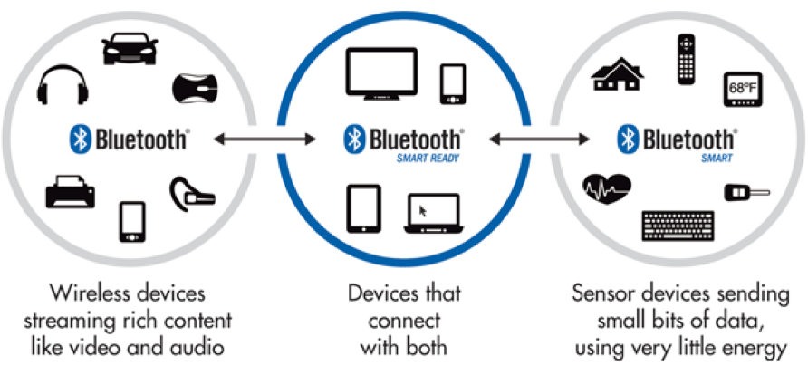

蓝牙4.0通信技术
概述
蓝牙技术联盟(Bluetooth SIG)在2012年推出了蓝牙4.0技术规范，它包含了三个方面：

- 传统蓝牙(Bluetooth)：适用于传输音频、音乐、文件等数据的场合。
- 低功耗蓝牙(Bluetooth Smart)：适用于小数据量传输但对功耗又敏感的场合，低功耗蓝牙又称之为Bluetooth Low Energy(BLE)。
- 双模蓝牙(Bluetooth Smart Ready)：双模蓝牙是兼容传统蓝牙和低功耗蓝牙两种技术指标的规范，如手机和电脑就属于双模蓝牙设备。
低功耗蓝牙技术
低功耗蓝牙技术是自蓝牙4.0起的蓝牙核心规范的组成部分。蓝牙低功耗使得蓝牙无线连接成为低成本、低容量电池即可操作需要数月甚至数年电池寿命的设备。蓝牙低功耗因而可使大量新的扩展应用能够从蓝牙无线技术中获益，包括手表、防盗钥匙扣、运动和健身传感器、医疗保健传感器和遥控器。
低功耗蓝牙的主要特点包括：
- 超低峰、平均和空闲模式功耗
- 可使用标准纽扣电池工作多年
- 低成本
- 协议简单，适用于小数据量传输
- 多平台支持，如iOS和Android移动平台，以及包括OSX、Windows 8和Linux在内的大多数桌面平台
JUMA的IP和服务
低功耗蓝牙技术的IP和服务包括：
- 软件开发框架(SDK)：通过SDK把低功耗蓝牙开发门槛降到最低。SDK由嵌入式端和移动端两部分组成，其中嵌入式端支持Nordic、ST、Amiccom等主流BLE芯片。
- 硬件开发平台：推出NOVA、SMP、Cannon等开发平台。客户依据不同的应用场景，选择合适的硬件平台，开发自己的产品。
- 快速原型开发服务：基于SDK和硬件开发平台，JUMA根据客户需要实现产品原型，帮助客户快速验证方案和演示方案。
- 技术咨询和支持服务：基于多年在蓝牙领域的实践经验，JUMA帮助客户解决蓝牙开发过程中的各类技术问题，如：芯片选型、功耗优化、传输速率、连接稳定性等等。
- 精简BLE协议栈：JUMA开发的精简低功耗蓝牙协议栈，占据大约25KB的Flash空间，适合对系统资源要求很低的应用场合。